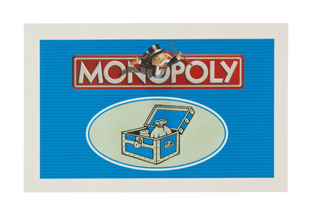
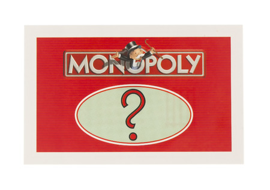

<!-- @authors Julia Prieto, Marc Sabina, Alejandra Paz, Angel Rivera
Estructura HTML,
Pagina para acceder a las distintas cartas, cofre o suerte -->
<div class="container mt-5">
  <div class="row">
    <div class="col-md-12">
      <h2 class="display-4 bi bi-collection-fill"> Cartas especiales</h2>
      <hr>
    </div>
  </div>
  <div class="row">
    <div class="col-lg-6 col-md-6 col-sm-12 mb-3">
      <div class="card">
        <a routerLink="/cartaCofre">
          
        </a>
      </div>
    </div>
    <div class="col-lg-6 col-md-6 col-sm-12 mb-3">
      <div class="card">
        <a routerLink="/cartaSuerte">
          
        </a>
      </div>
    </div>
  </div>
</div>